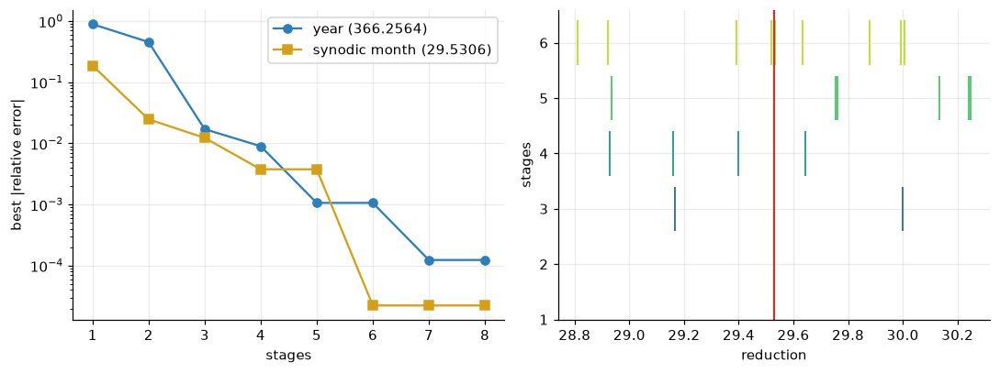
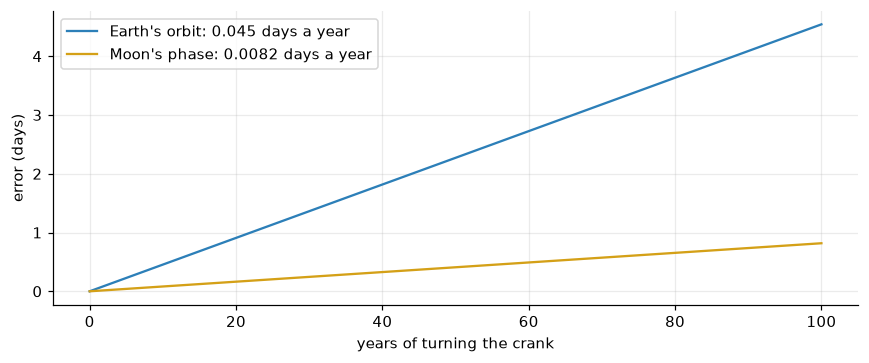

Continued fractions, smooth numbers and epicyclic gearing: making the Sun, Earth and Moon keep time with eight sizes of gear
An orrery built from LEGO Technic gears and simulated in MuJoCo. Why the year and the month cannot be geared exactly, why the classic fractions are useless with LEGO’s tooth counts, a search over every train the parts allow, the epicyclic trick that gives the solar day for free, and a simulated year measured against the sky.
mechanics
lego
number theory
astronomy
python
Author
Paul Milne
Published
October 27, 2026
An orrery is a clockwork model of the solar system. They take their name from Charles Boyle, Earl of Orrery, for whom one was made in the early 1700s, but the idea is far older: the Antikythera mechanism, built in Greece some two thousand years ago, already modelled the Moon’s cycles with bronze gears. The hard part has never been the mechanism. It is the arithmetic. A pair of gears turns at a ratio of whole numbers of teeth, and the sky does not run on whole numbers: there are 365.2564 days in the year and 29.5306 days from one new Moon to the next.
The previous post found that LEGO Technic gears come in only eight sizes, with 8 to 40 teeth. This post asks how well an orrery built from those eight sizes can keep time, finds the best gear trains by search, builds the machine in MuJoCo with every gear a real moving part, and runs it for a simulated year.
About the model and the sources
The astronomical periods are the standard modern values. The orrery is a design, simulated rather than built: every gear and every mesh is in the model, at real Technic sizes, but the layout has not been tested with physical parts. The history in the introduction is general knowledge; check details before quoting them.
Show code
import sys, math, time, warningsfrom pathlib import Pathfrom fractions import Fractionwarnings.filterwarnings("ignore")here = Path.cwd().resolve()ROOT =next(p for p in (here.parents[1] /"lego-bricks", here.parent /"lego-bricks", here.parents[1] /"mechanics"/"lego-bricks") if (p /"bricks").exists())sys.path.insert(0, str(ROOT))import numpy as npimport matplotlib.pyplot as pltimport mujocofrom bricks import gears as Gfrom bricks import orrery as Oplt.rcParams.update({"figure.dpi": 110, "axes.grid": True, "grid.alpha": 0.25,"axes.spines.top": False, "axes.spines.right": False})BLUE, RED, GOLD, GREEN, GREY ="#2c7fb8", "#c0392b", "#d4a017", "#2ca25f", "#7f8c8d"
What an orrery has to compute
Two kinds of day, two kinds of month
The Earth turns once on its axis relative to the stars in a sidereal day, about 23 hours 56 minutes. But while it turns, it also moves a little way round its orbit, so it has to turn slightly further before the Sun is overhead again. That longer turn is the solar day, the 24 hours of the clock. Over a year the difference adds up to exactly one turn: the Earth turns \(366.2564\) times relative to the stars in a year, but only \(365.2564\) times relative to the Sun.
The Moon has the same pair of periods. It goes round the Earth relative to the stars in a sidereal month of 27.32 days, but because the Earth has moved on round the Sun meanwhile, it takes 29.53 days to return to the same phase, the synodic month. The rates add like the days:
print(f"sidereal year {G.SIDEREAL_YEAR:12.6f} days")print(f"synodic month {G.SYNODIC_MONTH:12.6f} days")print(f"sidereal month {G.SIDEREAL_MONTH:12.6f} days")print(f" from the formula {1/ (1/ G.SYNODIC_MONTH +1/ G.SIDEREAL_YEAR):12.6f} days")print(f"sidereal day {G.SIDEREAL_DAY *24:12.6f} hours")
sidereal year 365.256363 days
synodic month 29.530589 days
sidereal month 27.321662 days
from the formula 27.321662 days
sidereal day 23.934472 hours
The epicyclic trick
The orrery’s year arm carries the Earth round the Sun. Gears mounted on a moving arm form an epicyclic (planetary) train, and they obey Willis’s rule: what a gear train on an arm transmits is not the rotation of the input shaft but its rotation relative to the arm. If the central shaft turns at \(\omega_c\) and the arm at \(\omega_a\), a train on the arm with ratio \(g\) turns its output at
The Earth’s spin. Let the crank turn the central shaft once per sidereal day, and carry its turning out along the arm to the Earth through a chain of gears with \(g = 1\). Then \(\omega_\text{Earth} = \omega_c\): the Earth turns once per sidereal day relative to the stars. Relative to the arm, which always points at the Sun, it turns at \(\omega_c - \omega_a\), which is once per solar day. The solar day costs no gears at all; it falls out of the geometry, exactly as it does in the sky.
The Moon. A second train on the arm reduces \((\omega_c - \omega_a)\), the solar day, by a ratio \(R_m\) to drive the Moon’s carrier relative to the arm. The Moon then goes round once per \(R_m\) solar days relative to the Sun direction. So \(R_m\) must be the synodic month, 29.5306, and the sidereal month comes out automatically.
The third train is fixed to the table: it reduces the central shaft to the arm’s hub by \(R_y\), the number of sidereal days in a year, 366.2564. So everything rests on two numbers that gears have to approximate: \(366.2564\) and \(29.5306\).
Fractions that cannot be built
The classic way to approximate a number by a fraction is its continued fraction. Its truncations, the convergents, are the best rational approximations for their size: no fraction with a smaller denominator comes closer. They give the famous calendar fractions: \(365\tfrac14\) for the Julian year, and \(235/19\) for the Moon, the Metonic cycle of 235 lunations in 19 years, which the Antikythera mechanism used.
Show code
for name, x in (("sidereal days per year", G.SIDEREAL_DAYS_PER_YEAR), ("synodic month (days)", G.MOON_REDUCTION), ("lunations per year", G.SIDEREAL_YEAR / G.SYNODIC_MONTH)): cf = G.continued_fraction(x, 8)print(f"{name}: {x:.6f} = [{cf[0]}; {', '.join(map(str, cf[1:]))}, ...]")for c in G.convergents(cf)[:6]:print(f" {str(c):>14s} = {float(c):12.6f} error {float(c) - x:+.2e} largest prime factor {G.largest_prime(c)}")
sidereal days per year: 366.256363 = [366; 3, 1, 9, 13, 1, 4, 3, ...]
366 = 366.000000 error -2.56e-01 largest prime factor 61
1099/3 = 366.333333 error +7.70e-02 largest prime factor 157
1465/4 = 366.250000 error -6.36e-03 largest prime factor 293
14284/39 = 366.256410 error +4.73e-05 largest prime factor 3571
187157/511 = 366.256360 error -2.92e-06 largest prime factor 887
201441/550 = 366.256364 error +6.36e-07 largest prime factor 809
synodic month (days): 29.530589 = [29; 1, 1, 7, 1, 2, 17, 1, ...]
29 = 29.000000 error -5.31e-01 largest prime factor 29
30 = 30.000000 error +4.69e-01 largest prime factor 5
59/2 = 29.500000 error -3.06e-02 largest prime factor 59
443/15 = 29.533333 error +2.74e-03 largest prime factor 443
502/17 = 29.529412 error -1.18e-03 largest prime factor 251
1447/49 = 29.530612 error +2.32e-05 largest prime factor 1447
lunations per year: 12.368746 = [12; 2, 1, 2, 2, 8, 10, 2, ...]
12 = 12.000000 error -3.69e-01 largest prime factor 3
25/2 = 12.500000 error +1.31e-01 largest prime factor 5
37/3 = 12.333333 error -3.54e-02 largest prime factor 37
99/8 = 12.375000 error +6.25e-03 largest prime factor 11
235/19 = 12.368421 error -3.25e-04 largest prime factor 47
1979/160 = 12.368750 error +3.71e-06 largest prime factor 1979
A gear train can make a fraction only if it can be factored into gear ratios. Its numerator must be the product of the driven gears’ tooth counts and its denominator the product of the drivers’. The Metonic \(235/19\) needs a 47 and a 19; the year’s \(1465/4\) needs a 293. The Antikythera mechanism’s makers cut whatever tooth counts they needed, including a gear of 223 teeth, a prime. LEGO’s tooth counts are 8, 12, 16, 20, 24, 28, 36 and 40, and every one of them is built from the primes 2, 3, 5 and 7. So every ratio a Technic gear train can make is a 7-smooth rational number, of the form
\[
2^{a}\,3^{b}\,5^{c}\,7^{d}, \qquad a, b, c, d \in \mathbb{Z},
\]
and not one of the convergents above is of that form. The best fractions mathematics has to offer are unbuildable.
Searching every train
The alternative is brute force: try every train that can be built. A reducing stage is a pair of gears from the same family (spur with spur, or double-bevel with double-bevel, which the previous post showed are the pairs that mesh on the grid), or a worm driving a spur gear. Building the trains up a stage at a time, every ratio reachable with \(k\) stages comes from one reachable with \(k-1\). Because all the ratios are 7-smooth with small exponents, the sets stay remarkably small.
Show code
t0 = time.time()levels = G.reachable(8)dt = time.time() - t0print(f"distinct reductions reachable with up to k stages (searched in {dt:.2f} s):")total =0for k inrange(1, 9): total +=len(levels[k])print(f" k = {k}: {total:5d}")best_year = G.best_reachable(G.SIDEREAL_DAYS_PER_YEAR, levels)best_moon = G.best_reachable(G.MOON_REDUCTION, levels)def show(name, best, target):print(f"\nbest {name} (target {target:.6f}):")for k inrange(1, 9): r, st, e = best[k]print(f" {k} stages: {str(r):>12s} = {float(r):11.5f} error {e:+.1e} "f"{' · '.join(f'{a}:{b}'if a >1elsef'worm:{b}'for a, b in st)}")show("year train", best_year, G.SIDEREAL_DAYS_PER_YEAR)show("Moon train", best_moon, G.MOON_REDUCTION)
fig, ax = plt.subplots(1, 2, figsize=(10, 3.8))ks =range(1, 9)ax[0].semilogy(ks, [abs(best_year[k][2]) for k in ks], "o-", color=BLUE, label="year (366.2564)")ax[0].semilogy(ks, [abs(best_moon[k][2]) for k in ks], "s-", color=GOLD, label="synodic month (29.5306)")ax[0].set_xlabel("stages"); ax[0].set_ylabel("best |relative error|"); ax[0].legend()cols = plt.cm.viridis(np.linspace(0, 0.9, 6))for k inrange(1, 7): xs = [float(r) for r in levels[k] if28.8<float(r) <30.3] ax[1].vlines(xs, k -0.4, k +0.4, color=cols[k -1], lw=1.2)ax[1].axvline(G.MOON_REDUCTION, color=RED, lw=1.5)ax[1].set_yticks(range(1, 7)); ax[1].set_ylabel("stages"); ax[1].set_xlabel("reduction")plt.tight_layout(); plt.show()

Figure 1: Left: the best relative error reachable with up to k stages, for the year and Moon trains. Right: every reduction between 28.8 and 30.3 that up to six stages can make, each drawn at the fewest stages that reach it, against the synodic month (red). The 7-smooth numbers are sparse, and the target falls between them.
The best trains are long. The Moon needs six stages to come within \(2\times10^{-5}\), using a fraction no textbook would suggest:
against the true \(29.530589\). Its numerator is \(945 = 3^3 \cdot 5 \cdot 7\) and its denominator \(2^5\), both as smooth as the parts require. The year needs seven stages to reach \(46875/128 = 366.2109\) (that is, \(3 \cdot 5^6 / 2^7\)), about a part in eight thousand. Worms do not help either target: their single tooth makes big, coarse steps, and the best trains are built from the gentle ratios 3:2, 5:2 and 7:3 instead.
The machine
The orrery uses the two winning trains and a 1:1 chain for the Earth’s spin:
The year train, seven stages, is coiled round the central shaft on the base: the axles stand on a circle that starts and ends at the centre, so the last gear meshes with the year arm’s hub, coaxial with the shaft. A plain idler gear in the loop makes the arm turn the same way as the crank.
The spin chain runs out along the arm: 24, 40, 24, 40, 24 teeth. The first and last gears are equal, so the ratio is 1, and an even number of meshes keeps the direction.
The Moon train, six stages, runs along the arm above it, ending on a tube round the Earth’s column that carries the Moon on a short liftarm.
Both trains on the arm are exactly 128 mm long, 16 studs, which is why the Earth sits there.
In MuJoCo, every gear is a body on a hinge joint, carried either by the base or by the arm. Each mesh is a constraint on the joints’ angles. For two gears with \(N_1\) and \(N_2\) teeth, turning by \(\theta_1\) and \(\theta_2\) relative to whatever carries them, rolling without slipping means
That is a linear combination of joint angles. MuJoCo calls such a combination a fixed tendon, and an equality constraint holds it at zero. The epicyclic meshes, between the central shaft and gears riding on the arm, are expressed exactly the same way, with the arm’s angle in the sum. The crank is driven by a velocity servo, and nothing else is told how to move.
Figure 2: The orrery in MuJoCo. Left: the whole machine, with the year train coiled round the central shaft and the spin and Moon trains running out along the arm. Right: the Earth and Moon, lit only by the Sun.
32 gears; year train coiled on a circle of radius 34.7 mm; arm 128 mm; 18 mesh constraints
Running it for a year
Turning the crank until the arm has gone once round the Sun, and reading every angle from the simulation:
Show code
m, facts = O.load()d = mujoco.MjData(m); d.ctrl[0] =2* math.pi # one crank turn (sidereal day) per simulated secondt0 = time.time()while O.angles(m, d, facts)["arm"] <2* math.pi: mujoco.mj_step(m, d)T = {k: v / (2* math.pi) for k, v in O.angles(m, d, facts).items()}solar_days = T["earth"] - T["arm"]lunations = T["moon"] - T["arm"]rows = [("sidereal days in the year", T["shaft"], G.SIDEREAL_DAYS_PER_YEAR), ("solar days in the year", solar_days, G.SIDEREAL_YEAR), ("synodic month (days)", solar_days / lunations, G.SYNODIC_MONTH), ("sidereal month (days)", solar_days / T["moon"], G.SIDEREAL_MONTH)]print(f"simulated one year in {time.time() - t0:.1f} s of computing\n")print(f"{'':28s}{'orrery':>12s}{'sky':>12s}{'error':>10s}")for name, model_v, sky in rows:print(f"{name:28s}{model_v:12.5f}{sky:12.5f}{model_v - sky:+10.5f}")
simulated one year in 1.6 s of computing
orrery sky error
sidereal days in the year 366.21029 366.25636 -0.04607
solar days in the year 365.21027 365.25636 -0.04609
synodic month (days) 29.53125 29.53059 +0.00066
sidereal month (days) 27.32196 27.32166 +0.00030
The machine does exactly what its gears say: 366.2109 sidereal days to the year, within a few millionths, and the constraints hold the meshes to within a fraction of a milliradian. Two numbers in the table were never put into the design. The solar days in the year come from the epicyclic arm, and so does the sidereal month, which comes out within a thousandth of a day of the real one.
The errors are what the arithmetic allowed. The year is short by about 0.045 days, so the orrery’s Earth gains a day on the real one every 22 years or so. The Moon’s month is long by 0.0007 days, which takes over a century to add up to a day.
Show code
years = np.linspace(0, 100, 200)year_err = (G.SIDEREAL_DAYS_PER_YEAR -float(facts["year_ratio"])) * years # days earlymoon_err = (float(facts["moon_ratio"]) - G.SYNODIC_MONTH) * years * G.SIDEREAL_YEAR / G.SYNODIC_MONTHfig, ax = plt.subplots(figsize=(8, 3.4))ax.plot(years, year_err, color=BLUE, label=f"Earth's orbit: {year_err[-1] /100:.3f} days a year")ax.plot(years, moon_err, color=GOLD, label=f"Moon's phase: {moon_err[-1] /100:.4f} days a year")ax.set_xlabel("years of turning the crank"); ax.set_ylabel("error (days)"); ax.legend()plt.tight_layout(); plt.show()

Figure 3: How far the orrery drifts from the sky, in days, over a century: the Earth’s place in its orbit (year train) and the Moon’s phase (Moon train).
The Moon’s phases, and eclipses
The Sun in the model is a light. MuJoCo’s lights are spotlights, so the sunlight that falls on the Earth and Moon comes from a lamp riding on the year arm at the Sun’s surface, aimed along the arm. It always faces the Earth, as the real Sun does. The video below rides on the arm beside the Earth for two months, lit by the Sun alone. The Earth turns its day side to the Sun once per solar day, and the Moon goes through its phases. Because this Moon orbits in the same plane as the Earth, it also passes through the Earth’s shadow at every full Moon: a lunar eclipse every month. The real Moon’s orbit is tilted by about 5°, which is why real eclipses are rare.
What would make it better
A tilted Earth. A real orrery keeps the Earth’s axis pointing the same way all year, to show the seasons. That takes one more train: a fixed gear on the central shaft driving an equal gear on the Earth’s mount through idlers, so the mount turns backwards exactly as fast as the arm turns forwards.
Better arithmetic with a differential. A Technic differential averages two rotations, so trains can be combined into sums and differences as well as products. A sum of smooth numbers need not be smooth: \(1465/4 = 360 + 25/4\), for instance, is out of reach of any product of LEGO ratios but within reach of a sum.
The Moon’s tilt and nodes, which would make eclipses rare and predictable: the problem the Antikythera mechanism was built to solve.